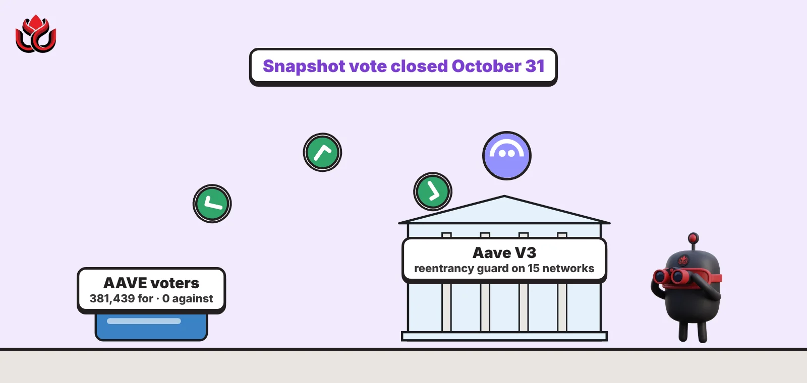
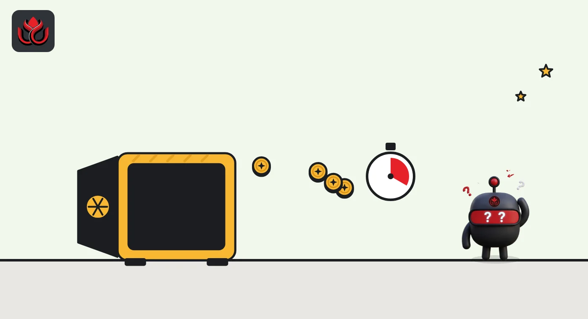
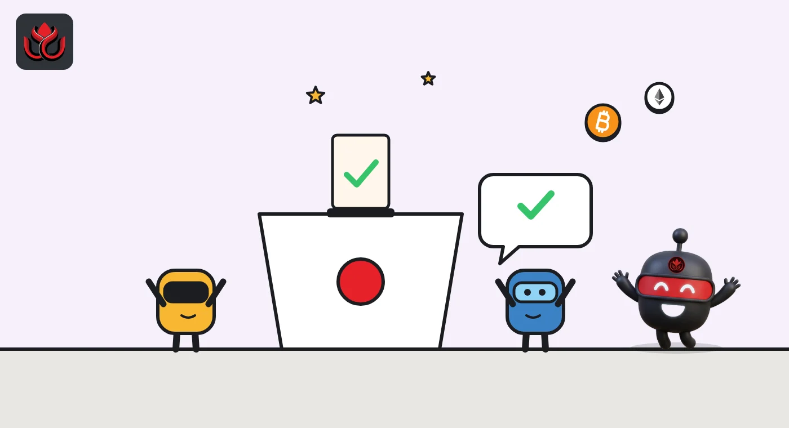

Aave V3.8 vote: 381,439 AAVE for, zero against, a new lock on 15 networks
Aave Labs wants a reentrancy guard on every active Aave V3 market, built so flash loans and liquidations still work. AAVE holders backed it with zero AAVE against in a Snapshot vote that closed October 31; audits come before the final onchain step.

Key points
- Aave Labs proposed Aave V3.8 on October 21, 2026: a reentrancy guard on Pool actions, built with Ethereum's transient storage.
- Flash loans check the lock but do not set it, so liquidations inside a flash loan still work.
- The upgrade covers active V3 markets on 15 networks. A Snapshot vote closed October 31 with no AAVE against; audits come before the final AIP.
 What DeepSea's data shows
What DeepSea's data shows
The vote on V3.8 comes as the AAVE token sits near a one-month high. DeepSea showed AAVE at $132.09 on the morning of November 2, up 17.2% in seven days and 39.6% in 30 days, with a market cap of $2.04 billion.
Big holders have been trimming. DeepSea flags whales as net sellers of about $152,600 over seven days, and shows $17.14 million of AAVE sent to exchanges against $16.51 million withdrawn. The traders it tracks on perpetual futures lean the other way: 94% of their AAVE positions, about $27.65 million, are long.
Data: DeepSea (desea.io), checked November 2, 2026, 7:58 a.m. ET.
What V3.8 changes
Aave Labs posted the V3.8 proposal on October 21, 2026, calling it "a non-invasive and very measured release." It does one main thing: it adds a reentrancy guard to the Pool, the core contract of each Aave V3 market.
Reentrancy is a classic smart contract bug. When a contract calls out to another contract, that outside code can call back in before the first action has finished and catch the books half updated. A guard is a lock: while one Pool action is running, the Pool refuses to start another from inside it.
Aave Labs says the guard keeps the Pool's accounting consistent, including when one transaction touches the Pool more than once. It frames the change as matching industry best practice and guarding against theoretical reentrancy attacks. The post does not describe any live exploit.
Why the lock costs little
Guards like this have a known cost: gas, the fee paid for each computation. Aave Labs says that cost is why such guards were a concern in the past. V3.8 builds the lock on transient storage, added to Ethereum by EIP-1153. Transient storage only lasts for a single transaction, which suits a lock that is set and cleared within one call, and Aave Labs says it keeps the extra cost small.
For ordinary users, nothing should look different. Supplying, borrowing, repaying and withdrawing work as before. The lock only matters to contracts that try to call back into the Pool while another Pool action is still running, which is the pattern reentrancy attacks rely on.

Why flash loans still work
Flash loans are loans with no collateral that must be borrowed and repaid in the same transaction. Bots use them to liquidate risky positions without tying up their own money.
Under V3.8, the two flash loan functions check the lock but do not set it. In practice, you cannot start a flash loan in the middle of another Pool action, but inside a flash loan you can still run other Pool actions, including a liquidation.
A forum user asked on October 23 whether liquidations inside a flash loan callback would break. Aave Labs replied the same day that they stay possible, and said existing integrations that combine flash loans with other Pool actions should keep working. It edited that reply on October 27 to match development progress.
Which networks get it
The upgrade targets every active V3 instance: Ethereum (both the Core and Lido markets), Plasma, Avalanche, BNB Chain, Monad, Base, Arbitrum, Mantle, X Layer, Polygon, Linea, Optimism, Gnosis, MegaETH and Celo. Instances where every asset is frozen and caps are set to zero are left out.
V3.8 will be published under the Business Source License, which limits commercial reuse of the code until a change date set by Aave governance. The intellectual property is to move to the Aave Foundation through a separate proposal. The previous release, Aave V3.7, went through the same forum process.

What happens next
On October 27, Aave Labs said the proposal was moving to Snapshot, an offchain poll of AAVE holders. Voting opened on October 28 and closed on October 31 at 8:34 a.m. ET.
The result was one-sided. According to the Snapshot page, 88 addresses voted, casting about 381,439 AAVE in favor, none against and a fraction of one token to abstain. A Snapshot vote is a signal, not the upgrade itself.
Certora and third-party audits are planned before the last step, an Aave Improvement Proposal (AIP) that upgrades the contracts onchain. Aave Labs added that more security reviews are being planned and that more defense-in-depth changes may come in later upgrades.
The vote in numbers
The Snapshot tally shows no opposition at all. The whole result came from 88 voting addresses. On Snapshot, each address counts by the AAVE voting power it holds or has been delegated, not one vote per person, so a few large holders can carry most of the weight.
The vote does not change any code. It tells Aave Labs that holders back the plan, which clears the way for the audit stage and, after that, the onchain AIP on each network.
Aave V3.8 Snapshot vote
AAVE
Source: Snapshot, Aave DAO, vote closed October 31, 2026
Timeline
Aave Labs posts the V3.8 ARFC
Forum question on flash loan liquidations; Aave Labs replies
Reply updated; proposal raised to Snapshot
Snapshot voting opens
Snapshot closes with about 381,439 AAVE for and none against
Audits, then an AIP to upgrade the in-scope markets
LC Insight analysis
This section is our reading of the facts above, not a statement of fact.
- We read V3.8 as housekeeping with a purpose. Aave V3 still runs on 15 networks while V4 grows, and closing a class of theoretical bugs on all of them at once is cheaper than fixing one after an incident.
- The flash loan carve-out is the part integrators should test. Bots and leverage tools that start a flash loan from inside another Pool call are exactly what the new lock blocks.
- Shipping under the Business Source License, with the IP headed to the Aave Foundation, shows Aave is still guarding its V3 code as attention moves to V4.
What's next
- Publication of the Certora and third-party audit reports
- The AIP date for each network
- Any integrator reporting that the new lock breaks its contracts
Disclaimer. This article is based on public information and the sources listed below as of the update time shown. It is for information only and is not investment, legal or tax advice. Figures may change as companies and authorities publish new data.